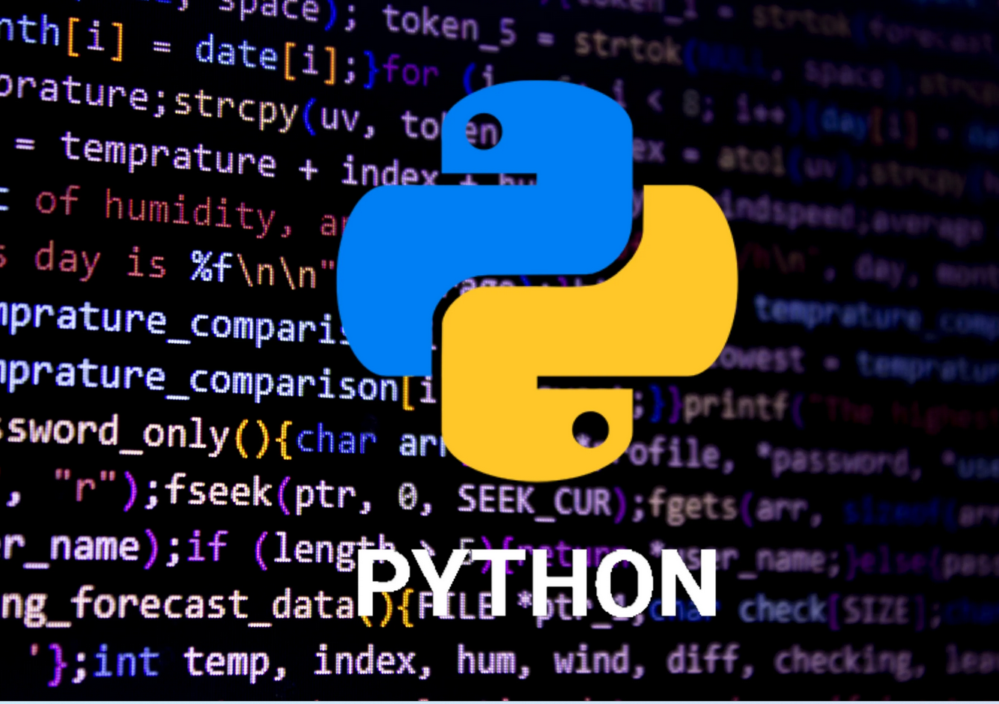

Bonjour, voici les chapitres durant notre parcours en SNT:
Chapitre #1: Python
 PythonChapitre #2: Internet
InternetChapitre #3: Le Web
Le WebChapitre #4: Les reseaux sociaux
Chapitre #5: Le traitement de donnes
Chapitre #6: La photographie numerique
Chapitre #7: La geolocalisation
Chapitre #8: Les objets connectes
Ensuite, les projets a realiser en SNT sont:
Si target="_blank", le lien ouvrira une autre fenêtre ou onglet.
Projet #1: Ma premiere petite page web
Projet #2: Notre page web oficielle de SNT